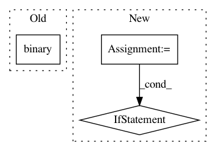

80f6dd16b2a7f5e90ff882751c37b7f2e02bd147,python/ray/experimental/client/server/server.py,RayletServicer,_schedule_function,#RayletServicer#Any#Any#,256
Before Change
output = remote_func.remote(*arglist, **kwargs)
if output.binary() in self.object_refs[task.client_id]:
raise Exception("already found it")
self.object_refs[task.client_id][output.binary()] = output
return ray_client_pb2.ClientTaskTicket(return_id=output.binary())
def _convert_args(self, arg_list, kwarg_map):
After Change
task.payload_id, task.client_id,
decode_options(task.baseline_options))
arglist, kwargs = self._convert_args(task.args, task.kwargs)
opts = decode_options(task.options)
if opts is not None:
remote_func = remote_func.options(**opts)
with current_remote(remote_func):
output = remote_func.remote(*arglist, **kwargs)
ids = self.unify_and_track_outputs(output, task.client_id)
return ray_client_pb2.ClientTaskTicket(return_ids=ids)
In pattern: SUPERPATTERN
Frequency: 3
Non-data size: 3
Instances
Project Name: ray-project/ray
Commit Name: 80f6dd16b2a7f5e90ff882751c37b7f2e02bd147
Time: 2020-12-20
Author: me@barakmich.com
File Name: python/ray/experimental/client/server/server.py
Class Name: RayletServicer
Method Name: _schedule_function
Project Name: ray-project/ray
Commit Name: 5cfa1934e4a2157d07ef534e1033a3f0e5bc1082
Time: 2020-12-18
Author: me@barakmich.com
File Name: python/ray/experimental/client/server/server.py
Class Name: RayletServicer
Method Name: WaitObject
Project Name: ray-project/ray
Commit Name: 80f6dd16b2a7f5e90ff882751c37b7f2e02bd147
Time: 2020-12-20
Author: me@barakmich.com
File Name: python/ray/experimental/client/server/server.py
Class Name: RayletServicer
Method Name: _schedule_method